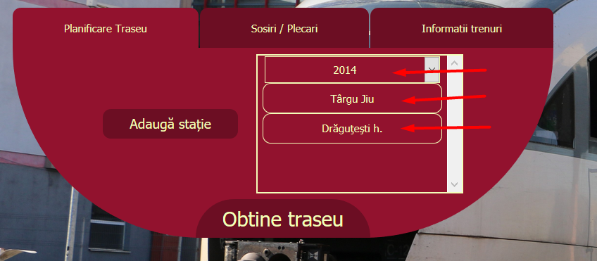
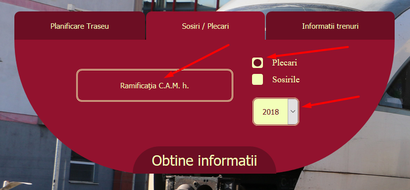
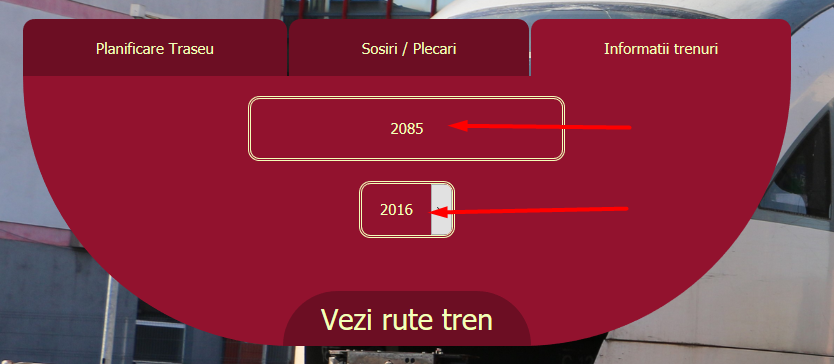
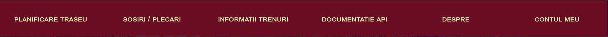
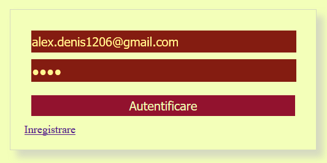
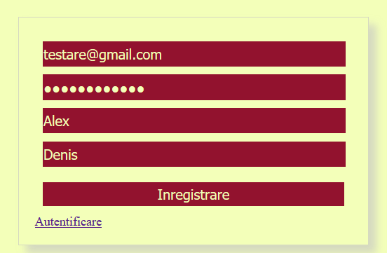
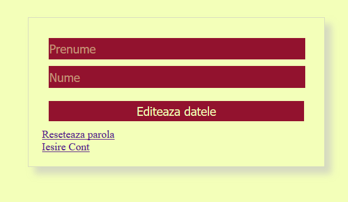
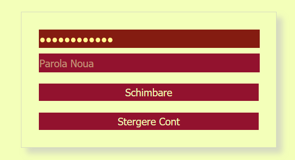

În meniul "Planificare Traseu" adăugați stații suplimentare dacă doriți un traseu personalizat sau introduceți direct stația origine, stația destinație și anul.
În meniul "Sosiri/Plecări" alegeți o stație, bifați "Plecări" sau "Sosiri" apoi alegeți anul și apăsați "Obține informații".
Alegeți numărul trenului iar apoi anul și apăsați butonul "Vezi rute tren".
Bara de navigație oferă rute spre informații suplimentare despre funcționalitățile aplicației și de asemenea catre documentația API-ului pus la dispoziția clientului și contul meu.
Pentru autentificare apăsați pe butonul Contul Meu iar acesta vă va redirecta către pagina de mai jos.
De asemenea pentru înregistrare apăsați pe Înregistrare de pe pagina de autentificare, care vă va redirecta către pagina de mai jos.
După autentificare în pagina Contul Meu se pot schimba datele personale.
De asemenea, se poate modifica parola tot din pagina Contul Meu, după autentificare, sau chiar ștergerea totală a contului.
